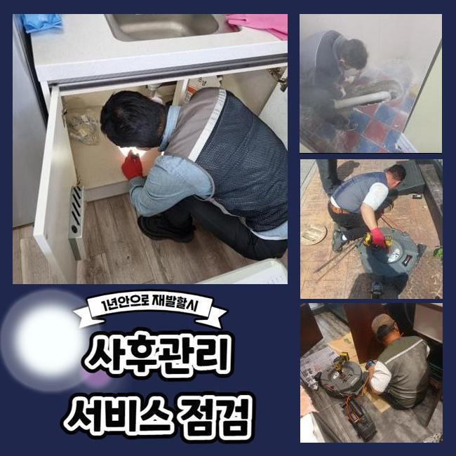
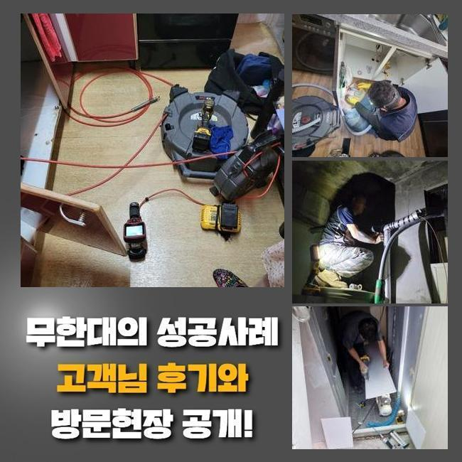
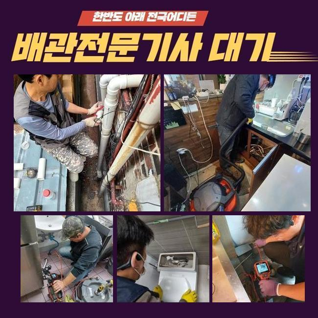
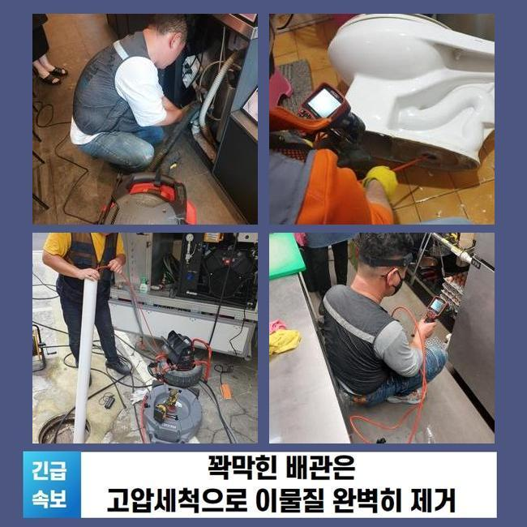
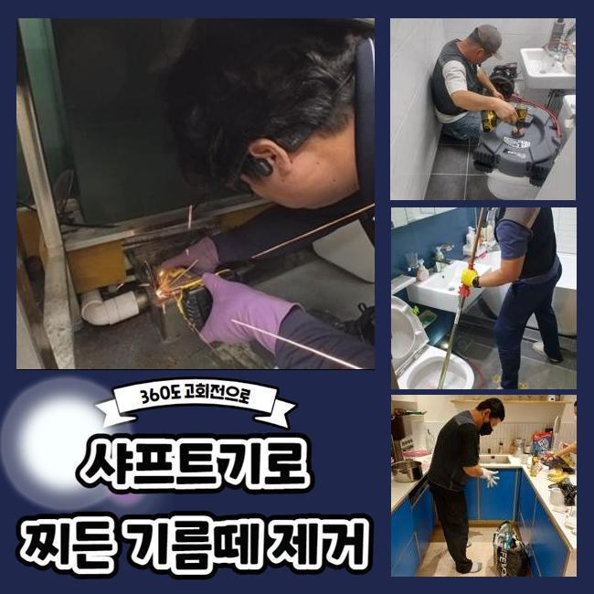
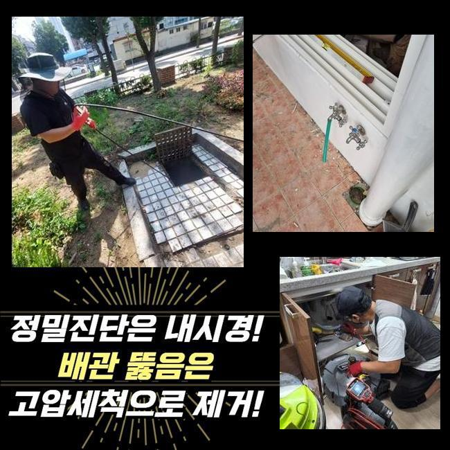
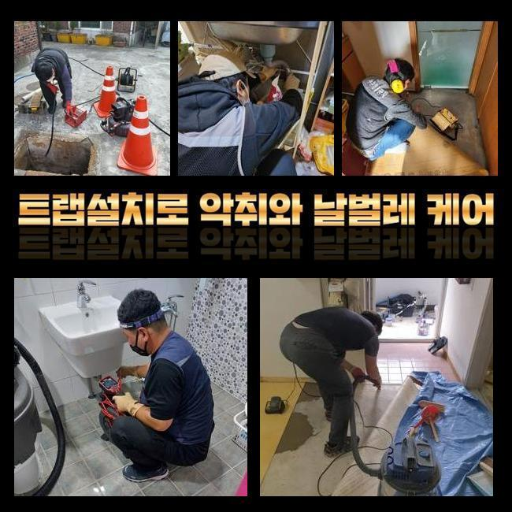

🏠 안성 성남동씽크대뚫음 일죽면 하수구뚫어주는곳 설비
성남 남동 싱크대막힘 전문 시공 후기

📋 작업 개요
- 위치: 성남 남동, 남동, 성남
- 서비스 유형: 싱크대막힘, 하수구막힘, 배관막힘, 누수수리, 역류해결, 뚫는업체, 배관청소, 고압세척
- 작업 일시: 2024. 10. 17. 10:33
- 업체명: 하수구수사대 (010-5615-2118)
🔍 문제 상황
안성 성남동씽크대뚫음 일죽면 하수구뚫어주는곳 설비
앞서 작업했던 장소라 함은 음식전문점의 키친이였죠
의뢰자께서는 트렌치라인이 이상한것 같다고 배관으로 안빠지는 불편으로 고충을 토로하셨습니다
현장으로 도착하고서 배수구에 물이 고여있었고 냄새까지 전체적으로 발생된 상황이였어요
당연하지만 식당인 까닭에 위생상태가 중요하게 여겨지는데요
그렇기에 서둘러 개선할 생각으로 구간마다를 살피기 시작했죠
바닥쪽의 트렌치를 관찰하였더니 기름들과 잔해물이 뒤엉킨 채 자리했고 고착화가 진행되어 돌과 같이 굳게되어버렸어요
더군다나 주변부에도 솟구쳐서 보건성에도 악영향들을 미치는 상황이였죠
해당 상황에서 신속히 대처를 실시하지 않는다면 역류나 누수 등의 증상이 생길 수 있어서 조속히 세척을 개시했습니다
원인들을 살펴보고 이에 맞는 작업 방식을 계획해주었습니다
우선 바닥 관로를 깔끔히 제거할 목적으로 소형 고압기를 꺼냈는데요

🔎 원인 분석
💡 전문가 진단: 정밀 진단 장비를 사용하여 슬러지의 고착 여부를 판명하고 타격/세척 작업을 실시했습니다.
고압세척의 경우 고압분사로 관로의 찌꺼기들을 깨끗히 제거시키죠
덧붙여 구경이 작은 트렌치에도 삽입되는 선을 사용해주어 이물축적된 스팟을 정말히 작업했죠
더군다나 내측의 내부모습을 관찰하기 위해서 내시경장비를 사용하여 작업 구간을 체크했습니다
내시경기기는 깔끔한 화면들을 띄워 파손이라던지 손상되어버린 지점도 특정하는 것이 가능합니다
위처럼 진행한다면 원인들을 정확하게 체크하며 증상이 심한 지점을 타겟하여 작업하는 것이 가능하죠
그로인해 요구되는 금액적 측면을 절감시킬 수 있어요
작업들을 시작하기 전에 고객님에게도 알맞은 계획과 관련하여 설명하였습니다
이와같이 실시해주면 전문지식이 없어도 작업수순을 알 수 있게 되고 안도하실 수 있죠
덧붙여 트랜치 청소의 중요함을 비롯해 내시경장치의 중요성까지 빈번히 일어나는 증세와 해결책에 관해서도 말씀드렸죠
하수관의 검수가 끝났을 땐 곧장 유지할 수 있는 방법에 관해서도 설명하여 하수관로가 꾸준히 사용될 수 있게 해드렸어요
의뢰자는 저희업체의 안내를 들으시더니 바로 청소를 원하셨기에 곧바로 이행하게되었어요

🔧 작업 과정
관로의 상황을 체크해보고 조속히 세척을 진행했어요
첫번째로 소형의 고압세척기기를 사용하여 트렌치배수구를 꼼꼼히 작업했습니다
고압세척기기가 트렌치라인을 강력하게 세척시켜 돌과 같이 굳어진 찌꺼기들을 서둘러 사라지게 해주었죠
작업 뒤엔 확인을 위하여 내시경장비로 하수라인을 촬영해 청결을 되찾은 모습을 확인했죠
내시경을 이용한 결과 벽에 달라붙은 내측을 체크해보는데 큰 비중을 차지했어요
보여지는 화면을 보고 하수라인의 어떠한 문제들이 있는것인지 어느정도의 잔해물이 축적되었는지를 관찰할 수 있었어요
꼼꼼한 진단으로 각 문제들을 특정하고 증상이 심한 지점을 집중해서 이행했습니다
각 관로들이 깨끗해지면서 배수되는 문제들도 신속하게 복구됐죠
하수도가 뚫리며 하수들이 흐르게되었어요
트랜치 내부 이물들이 어느정도 사그라들면 바닥부분도 깨끗히 세척해드렸습니다
식당의 경우 음식을 다루고 있어 위생유지가 중요할 수 밖에요
그렇기에 끝마치기전 위생에도 문제가 되지 않게 마무리했어요
청소가 마무리된 뒤 고객분도 확인을 해보셨어요
각 라인이 티끌 없이 배수되는 걸 확인할 수 있었죠
당연히 배수가 완화되어 오수들이 역류하게되는 증세들도 없어졌고 배수환경들이 우수해졌는데요
이러한 내용들이 하수구 막힘 증세로 불편을 감당하고 있는 의뢰인들께 보탬이 되고자합니다
저희의경우 막히게되는 문제들을 올바르게 완화시키고 상가라던지 메인관로 교체와 석션과정 그리고 작은 고압 세척 작업 등 결함없는 해결을 제공하고있어요


✅ 작업 완료
주택의 시공과 함께 역류할지라도 전문성들을 발휘해 잠재워 재발되는 확률도 최소화합니다
덧붙여 음식점과 같은 장소의 증세들은 음식잔해와 기름으로 주로 나타나는데
이 과정에서 각종 기기로 진단과 청소를 이행하며 의뢰인분에게도 작업의 진척 등을 안내해드리고 통수검열을 실시한답니다
하수구 불편으로 불편을 감당해야된다면 편히 의뢰하시면 된답니다
피해를 완화시키고 물을 편히 쓸 것을 보장합니다




⚠️ 베란다 누수 및 방수 관리 방법
- ✅ 비가 많이 올 때 창틀 주변이나 아래층 천장에 얼룩이 생기는지 정기적으로 확인해 보세요.
- ✅ 우수관 주변 실리콘 마감이 들뜨거나 깨진 틈새가 있는지 손상 여부를 수시로 체크하세요.
- ✅ 베란다 바닥 타일의 줄눈(메지)이 소실되면 그 틈으로 물이 침투하여 누수가 유발됩니다.
- ✅ 누수 의심 증상 발견 시 방치하면 아래층 손실이 커지므로 즉시 전문가의 진단을 받으십시오.
💡 핵심 정리
- 확실한 장비 작업(내시경 점검 및 샤프트 스케일링)으로 원인을 뿌리 뽑습니다.
- 작업 후 1년 이내에 동일한 부위 재발 시 100% 무상 A/S 서비스를 보장합니다.
- 서울 · 경기 · 인천 전 지역에 24시간 언제든 긴급 출동할 수 있도록 항시 대기 중입니다.
❓ 자주 묻는 질문 (FAQ)
🚨 성남 남동 싱크대막힘 문제로 고민이신가요?
정확한 원인 진단과 확실한 시공으로 재발 없는 해결을 약속드립니다.
24시간 긴급 출동 | 서울 · 경기 · 인천 전지역 | 1년 내 재발 시 무상 A/S